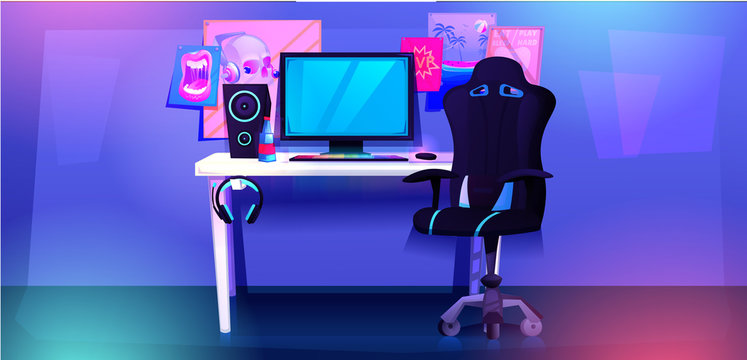

Building a gaming PC from scratch is the only sure-fire way to ensure that your system is capable of satisfying all of your personal preferences.
When you determine everything that goes into your PC from the power supply up, you know that you'll be able to play the games you want at the frame rates you want.
and Tricks